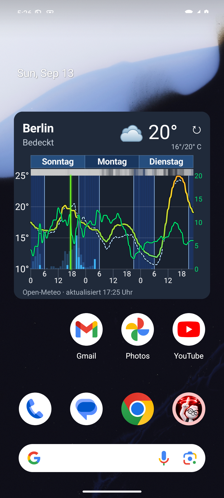
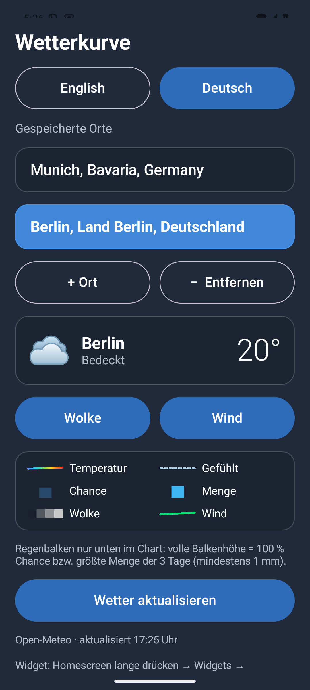
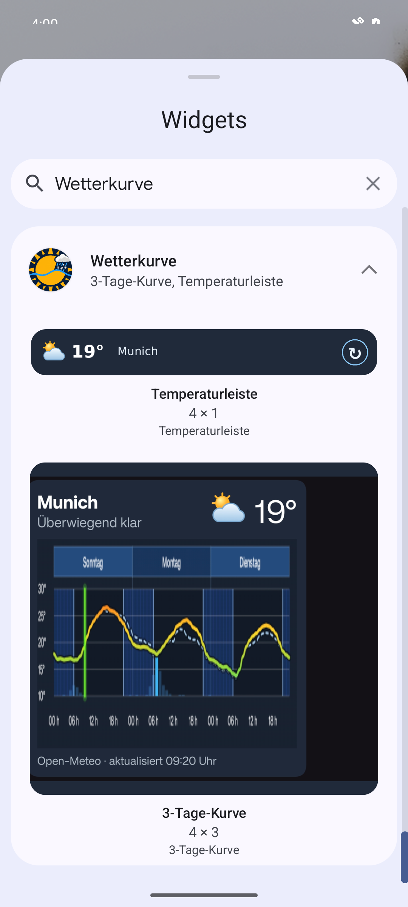

{kind=link}
{kind=link}
{kind=link}
{kind=link}
EIN PRIVATES HOBBYPROJEKT
Für den Alltag gemacht.
Wetterkurve wird als persönliches Projekt entwickelt und nach und nach verbessert. Der Quellcode ist öffentlich einsehbar.
Den Code auf GitHub ansehen ↗ANDROID · GNOME · WINDOWS
Temperatur, Regen und Wind auf einen Blick.
Erkenne, wann sich das Wetter verändert.
Ein privates Hobbyprojekt. Der Quellcode ist offen.

SCHRITT FÜR SCHRITT
Sieh dir alle Kapitel an oder spring direkt zu der Funktion, die du gerade brauchst. Echte Aufnahmen, deutsche Erklärungen und Untertitel.
Das Video wird erst beim Abspielen geladen.
ENTDECKE DIE APP
Wähle ein Kapitel. Sieh den Bildschirm. Schau dir den Ablauf an.
01 / Das Wetter als Kurve
Wetterkurve zeigt dir die nächsten drei Tage auf deinem Startbildschirm. Die gelbe Kurve steht für die Temperatur. Unter den Wochentagen siehst du die Wolkendecke. Ein helleres Feld bedeutet mehr Wolken. Die grüne Linie zeigt den Wind; seine Stärke liest du rechts ab. Regenwahrscheinlichkeit und Regenmenge ergänzen die Vorhersage.
Deutsch · mit Untertiteln
02 / Orte auswählen
So fügst du eine Stadt hinzu. Öffne Wetterkurve und tippe auf plus Ort. Gib den Namen ein, zum Beispiel Berlin. Wähle den passenden Treffer aus der Liste. Berlin ist jetzt gespeichert. Mit einem Tipp wechselst du zwischen deinen Orten. Auch das Widget zeigt anschließend die ausgewählte Stadt. Du kannst bis zu drei Orte speichern. Eine GPS-Berechtigung brauchst du dafür nicht.
Deutsch · mit Untertiteln
03 / Die Ansicht anpassen
Du entscheidest, welche Wetterwerte du sehen möchtest. Tippe in der App auf Wind. Die Taste wird umrandet: Der Wind ist ausgeschaltet. Auf dem Startbildschirm verschwindet die grüne Kurve samt rechter Skala. Schalte Wind wieder ein, um sie zurückzuholen. Genauso funktioniert Wolke. Ohne Wolkendecke verschwindet das Band unter den Wochentagen. Die Temperatur und der Regen bleiben sichtbar. Die Einstellungen gelten für deine Widgets.
Deutsch · mit Untertiteln

04 / Wetter auf dem Startbildschirm
Wetterkurve bringt zwei Android-Widgets mit. Halte eine freie Stelle auf dem Startbildschirm gedrückt und öffne Widgets. Wähle Wetterkurve und ziehe die gewünschte Ansicht auf deinen Startbildschirm. Es gibt eine kompakte Übersicht und ein Kurven-Widget. Damit siehst du die Wetterentwicklung direkt, ohne jedes Mal die App zu öffnen.
Deutsch · mit Untertiteln

EIN PRIVATES HOBBYPROJEKT
Wetterkurve wird als persönliches Projekt entwickelt und nach und nach verbessert. Der Quellcode ist öffentlich einsehbar.
Den Code auf GitHub ansehen ↗DEINE DATEN, VERSTÄNDLICH ERKLÄRT
Die App fragt Wetterdaten direkt bei Open-Meteo ab. Dafür verwendet sie den Ort, den du auswählst. Eine GPS-Berechtigung ist nicht erforderlich. Einstellungen und zwischengespeicherte Vorhersagen liegen lokal auf deinem Gerät.
Datenschutzhinweise lesen ↗Entdecke die App in deinem Tempo.
Zum Tutorial ▶